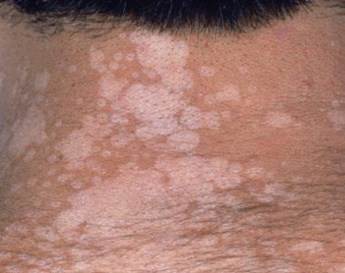
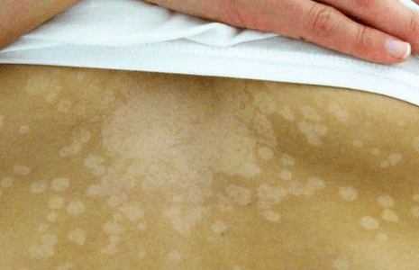

The fungus Malassezia is a type of yeast found on the surface of the skin. It
normally doesn’t cause any health problems. In fact, many of the microbiota
(or microscopic organisms), including yeasts like Malassezia, that live in large
communities on your skin help protect you from infections and other pathogens that
can cause harm or disease. They live alongside your body’s cells in symbiotic
relationships, with skin cells and tiny organisms supporting and benefiting each other.
Sometimes, however, this yeast can grow out of control and affect the natural color
or pigmentation of your skin. When this happens, you may develop patches of skin
that are lighter or darker than the surrounding skin. This condition, which isn’t
contagious, is known as tinea versicolor, or pityriasis versicolor. The condition
occurs when a type of yeast from the Malassezia family causes an infection or
suppresses your immune system.


Discolored patches of skin are the most noticeable symptom of tinea versicolor, and these patches usually show up on the arms, chest, neck, or back. These patches may be:
Some conditions with overlapping symptoms, such as vitiligo, are often mistaken for tinea versicolor. However, vitiligo can differ from tinea versicolor in several noticeable ways, including: